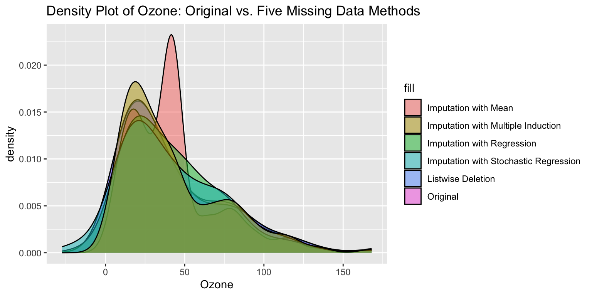

Code
# Load the airquality dataset
data("airquality")KW
April 23, 2025
Missing data is a common problem and dealing with it appropriately is extremely important. Ignoring the missing data points or filling them incorrectly may cause the models to work in unexpected ways and cause the predictions and inferences to be biased.
Le’ts consider built-in dataset ‘airquality’ in R as a sample dataset.
| Name | airquality |
| Number of rows | 153 |
| Number of columns | 6 |
| _______________________ | |
| Column type frequency: | |
| numeric | 6 |
| ________________________ | |
| Group variables | None |
Variable type: numeric
| skim_variable | n_missing | complete_rate | mean | sd | p0 | p25 | p50 | p75 | p100 | hist |
|---|---|---|---|---|---|---|---|---|---|---|
| Ozone | 37 | 0.76 | 42.13 | 32.99 | 1.0 | 18.00 | 31.5 | 63.25 | 168.0 | ▇▃▂▁▁ |
| Solar.R | 7 | 0.95 | 185.93 | 90.06 | 7.0 | 115.75 | 205.0 | 258.75 | 334.0 | ▅▃▅▇▅ |
| Wind | 0 | 1.00 | 9.96 | 3.52 | 1.7 | 7.40 | 9.7 | 11.50 | 20.7 | ▂▇▇▃▁ |
| Temp | 0 | 1.00 | 77.88 | 9.47 | 56.0 | 72.00 | 79.0 | 85.00 | 97.0 | ▂▃▇▇▃ |
| Month | 0 | 1.00 | 6.99 | 1.42 | 5.0 | 6.00 | 7.0 | 8.00 | 9.0 | ▇▇▇▇▇ |
| Day | 0 | 1.00 | 15.80 | 8.86 | 1.0 | 8.00 | 16.0 | 23.00 | 31.0 | ▇▇▇▇▆ |
I would say it is probably not MCAR, since most of the missing data is for Ozone and Solar.R. There are also lots of clusters in missing data. I would guess it’s probably MAR, but could also be MNAR.
| statistic | df | p.value | missing.patterns |
|---|---|---|---|
| 35.10613 | 14 | 0.0014178 | 4 |
Our p-value is < 0.05 and the test is significant, so it is not MCAR.
Creating a binary indicator for missingness allows you to test whether the presence of missing data is related to observed data.
Welch Two Sample t-test
data: Wind by Ozone_miss
t = -0.60911, df = 63.646, p-value = 0.5446
alternative hypothesis: true difference in means between group 0 and group 1 is not equal to 0
95 percent confidence interval:
-1.6893132 0.8999377
sample estimates:
mean in group 0 mean in group 1
9.862069 10.256757
Welch Two Sample t-test
data: Temp by Ozone_miss
t = -0.026831, df = 60.447, p-value = 0.9787
alternative hypothesis: true difference in means between group 0 and group 1 is not equal to 0
95 percent confidence interval:
-3.643306 3.546847
sample estimates:
mean in group 0 mean in group 1
77.87069 77.91892
Welch Two Sample t-test
data: Month by Ozone_miss
t = 4.0092, df = 92.075, p-value = 0.0001236
alternative hypothesis: true difference in means between group 0 and group 1 is not equal to 0
95 percent confidence interval:
0.4273815 1.2664675
sample estimates:
mean in group 0 mean in group 1
7.198276 6.351351
Welch Two Sample t-test
data: Day by Ozone_miss
t = -0.64426, df = 57.826, p-value = 0.522
alternative hypothesis: true difference in means between group 0 and group 1 is not equal to 0
95 percent confidence interval:
-4.576080 2.347749
sample estimates:
mean in group 0 mean in group 1
15.53448 16.64865
Welch Two Sample t-test
data: Wind by Solar_miss
t = 0.65629, df = 6.4571, p-value = 0.5343
alternative hypothesis: true difference in means between group 0 and group 1 is not equal to 0
95 percent confidence interval:
-2.674488 4.681338
sample estimates:
mean in group 0 mean in group 1
10.00342 9.00000
Welch Two Sample t-test
data: Temp by Solar_miss
t = 0.98706, df = 6.2689, p-value = 0.3602
alternative hypothesis: true difference in means between group 0 and group 1 is not equal to 0
95 percent confidence interval:
-7.436381 17.669258
sample estimates:
mean in group 0 mean in group 1
78.11644 73.00000
Welch Two Sample t-test
data: Month by Solar_miss
t = 1.2018, df = 6.4489, p-value = 0.2717
alternative hypothesis: true difference in means between group 0 and group 1 is not equal to 0
95 percent confidence interval:
-0.7432664 2.2266323
sample estimates:
mean in group 0 mean in group 1
7.027397 6.285714
Welch Two Sample t-test
data: Day by Solar_miss
t = 2.1941, df = 6.6803, p-value = 0.06612
alternative hypothesis: true difference in means between group 0 and group 1 is not equal to 0
95 percent confidence interval:
-0.6161166 14.5769776
sample estimates:
mean in group 0 mean in group 1
16.123288 9.142857 Ozone missing data is related to month. The solar missing data is not related to other variables.
Create new and appropriately named datasets that are based on airquality for each of the following ways of fixing the dataset:
- (a) "listwise deletion" or "complete case analysis" --- where entire records from the analysis are removed if they are missing any data point in one or more variables
- (b) Imputation with mean --- involves filling in the missing values with the mean of the available values in the same variable.
- (c) Imputation with regression (use mice package)
- (d) Imputation with stochastic regression (use mice package)
- (e) Imputation with multiple induction (use mice package, 5 imputations, and Predictive mean matching method)
iter imp variable
1 1 Ozone Solar.R
iter imp variable
1 1 Ozone Solar.R
2 1 Ozone Solar.R
3 1 Ozone Solar.R
4 1 Ozone Solar.R
5 1 Ozone Solar.RCompare the eventual distribution from these datasets on the variable ’Ozone’against the orgiinal. Below is a template that considers only 2 datasets but please consider all the datasets you generated within a single plot
ggplot(airquality, aes(x=Ozone, fill="Original")) +
geom_density(alpha=0.5) +
geom_density(data=air_a, aes(x=Ozone, fill="Listwise Deletion"), alpha=0.5) +
geom_density(data=air_b, aes(x=Ozone, fill="Imputation with Mean"), alpha=0.5) +
geom_density(data=air_c, aes(x=Ozone, fill="Imputation with Regression"), alpha=0.5) +
geom_density(data=air_d, aes(x=Ozone, fill="Imputation with Stochastic Regression"), alpha=0.5) +
geom_density(data=air_e, aes(x=Ozone, fill="Imputation with Multiple Induction"), alpha=0.5) +
labs(title="Density Plot of Ozone: Original vs. Five Missing Data Methods")
What do you observe?
List-wise deletion mostly keeps the original density shape.
Imputation with mean is clearly the worst, as it seems to decrease variability.
Imputation with regression and stochastic regression does ok, but has more spread out density than the original.
Imputation with multiple induction seems to keep the original density shape while keeping all the data.
---
title: "Lab: Missing Data"
subtitle: "Princeton University"
date: "2025-04-23"
author: "KW"
categories: [code, analysis]
format:
html:
self-contained: false
anchor-sections: true
code-tools: true
code-fold: true
fig-width: 8
fig-height: 4
code-block-bg: "#f1f3f5"
code-block-border-left: "#31BAE9"
mainfont: Source Sans Pro
theme: journal
toc: true
toc-depth: 3
toc-location: left
captions: true
cap-location: margin
table-captions: true
tbl-cap-location: margin
reference-location: margin
pdf:
pdf-engine: lualatex
toc: false
number-sections: true
number-depth: 2
top-level-division: section
reference-location: document
listings: false
header-includes:
\usepackage{marginnote, here, relsize, needspace, setspace}
\def\it{\emph}
execute:
freeze: auto
echo: true
message: false
warning: false
fig-align: center
fig-width: 12
fig-height: 8
editor_options:
chunk_output_type: inline
code-overflow: wrap
html:
code-fold: true
code-tools: true
editor: visual
---
---
Missing data is a common problem and dealing with it appropriately is extremely important. Ignoring the missing data points or filling them incorrectly may cause the models to work in unexpected ways and cause the predictions and inferences to be biased.
Le'ts consider built-in dataset 'airquality' in R as a sample dataset.
```{r}
# Load the airquality dataset
data("airquality")
```
#### Question 1:
(a) Examine this dataset for missing values. While there are many ways to do this, the skim function from the library 'skimr' is elegant;
```{r}
library(skimr)
library(tidyverse)
library(knitr)
library(mice)
skim(airquality)
```
(b) use the nanair package to visualize missing values
```{r, warning=FALSE}
library(naniar)
vis_miss(airquality)
```
(c) even though it's hard to confirm based on visualizations alone, what do your visualizations lead you to believe about the missing data being MCAR, MAR, or MNAR?
I would say it is probably not MCAR, since most of the missing data is for Ozone and Solar.R. There are also lots of clusters in missing data. I would guess it's probably MAR, but could also be MNAR.
(d) Carry out Little's statistical test to evaluate MCAR and report results.
```{r, warning=FALSE}
mcar_test(airquality) %>% kable()
```
Our p-value is < 0.05 and the test is significant, so it is not MCAR.
(e) Creating a binary indicator for missingness allows you to test whether the presence of missing data is related to observed data.
- For instance, you can create a dummy variable: 1 = Missing; 0 = Observed.
- Next you can conduct a chi-square test or t-test:
- Chi-square: Compare proportions of missingness ***across groups***.
- T-test: Compare means of (other) observed variables with missingness indicators.
```{r}
air = airquality %>% #can also use case_when #if missing 1 else
mutate(Ozone_miss = ifelse(is.na(Ozone), 1, 0),
Solar_miss = ifelse(is.na(Solar.R), 1, 0))
t.test(Wind ~ Ozone_miss, data = air, var.equal = FALSE)
t.test(Temp ~ Ozone_miss, data = air, var.equal = FALSE)
t.test(Month ~ Ozone_miss, data = air, var.equal = FALSE)
t.test(Day ~ Ozone_miss, data = air, var.equal = FALSE)
t.test(Wind ~ Solar_miss, data = air, var.equal = FALSE)
t.test(Temp ~ Solar_miss, data = air, var.equal = FALSE)
t.test(Month ~ Solar_miss, data = air, var.equal = FALSE)
t.test(Day ~ Solar_miss, data = air, var.equal = FALSE)
```
Ozone missing data is related to month. The solar missing data is not related to other variables.
#### Question 2:
Create **new and appropriately named datasets** that are based on airquality for each of the following ways of fixing the dataset:
```
- (a) "listwise deletion" or "complete case analysis" --- where entire records from the analysis are removed if they are missing any data point in one or more variables
- (b) Imputation with mean --- involves filling in the missing values with the mean of the available values in the same variable.
- (c) Imputation with regression (use mice package)
- (d) Imputation with stochastic regression (use mice package)
- (e) Imputation with multiple induction (use mice package, 5 imputations, and Predictive mean matching method)
```
```{r, warning=FALSE}
# (a)
air_a = airquality %>% drop_na()
# (b)
air_b = airquality %>%
mutate(
Ozone = if_else(is.na(Ozone), mean(Ozone, na.rm = TRUE), Ozone),
Solar.R = if_else(is.na(Solar.R), mean(Solar.R, na.rm = TRUE), Solar.R)
)
# (c)
air_c = complete(mice(airquality, method="norm.predict", m=1, maxit=1))
# (d)
air_d = complete(mice(airquality, m=1, method="norm.nob"))
# (e)
m=5
imp = mice(airquality, m = m, seed = 24415, method="pmm", print = FALSE)
air_e = complete(imp, action="long")
```
#### Question 3:
Compare the eventual distribution from these datasets on the variable 'Ozone'against the orgiinal. Below is a template that considers only 2 datasets but please consider all the datasets you generated within a single plot
```{r, warning=FALSE}
ggplot(airquality, aes(x=Ozone, fill="Original")) +
geom_density(alpha=0.5) +
geom_density(data=air_a, aes(x=Ozone, fill="Listwise Deletion"), alpha=0.5) +
geom_density(data=air_b, aes(x=Ozone, fill="Imputation with Mean"), alpha=0.5) +
geom_density(data=air_c, aes(x=Ozone, fill="Imputation with Regression"), alpha=0.5) +
geom_density(data=air_d, aes(x=Ozone, fill="Imputation with Stochastic Regression"), alpha=0.5) +
geom_density(data=air_e, aes(x=Ozone, fill="Imputation with Multiple Induction"), alpha=0.5) +
labs(title="Density Plot of Ozone: Original vs. Five Missing Data Methods")
```
What do you observe?
List-wise deletion mostly keeps the original density shape.
Imputation with mean is clearly the worst, as it seems to decrease variability.
Imputation with regression and stochastic regression does ok, but has more spread out density than the original.
Imputation with multiple induction seems to keep the original density shape while keeping all the data.
#### Of course, each dataset you produced will lead to different modeling results, but we won't go into that in today's lab.